城市低空公共服务验证基础设施
城内决策 · 场外验证 · 获批进入
总览地图 · 三层范围 · 重点区域
用地分区：研发、公共空间、服务与社区的临时概念底板
交通慢行：步行、骑行、轨道与普通物流优先
蓝绿公共空间：遗址公园、河流、绿地与安静时段先保护
建筑：保留与室内轻改，不设置常态机库机巢
更新项目：十个证据、界面、验证与审计项目包
AI 场景：六公共、四验证、两拒绝
核心指标
11.41 km² site_area_sqm · 临时几何
12.34% green_ratio · 概念复算
7.33% public_space_ratio · 概念复算
任务覆盖 · 自检状态
来源：法规、政策、海淀公开实践与仓库资料
假设：官方边界、现场基线、批准、成本和需求仍待专业确认
选择任务查看三段责任链和停止条件
完整设计图谱
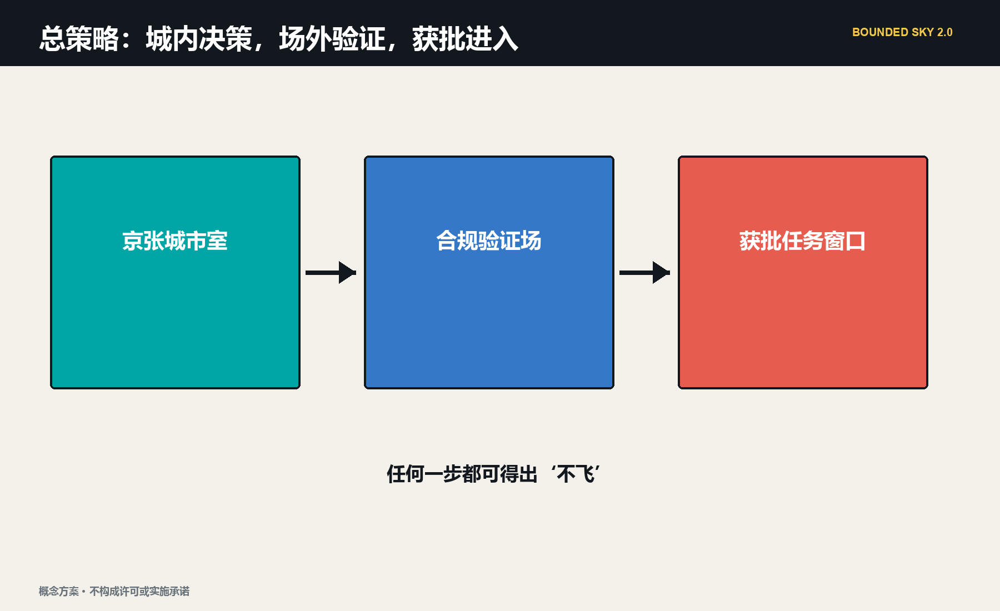
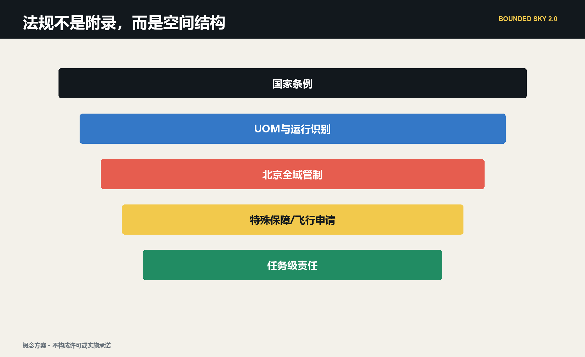
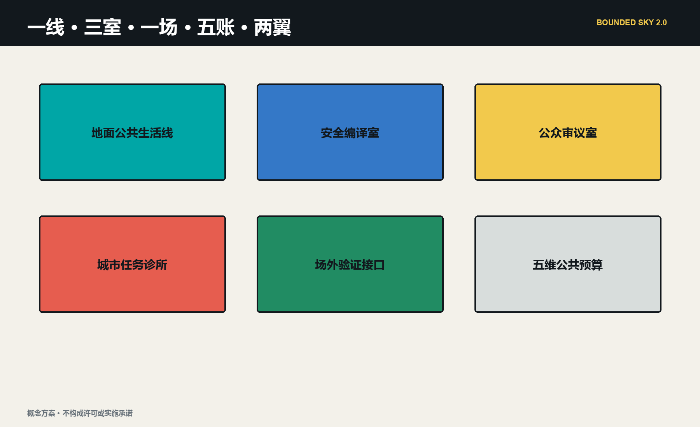
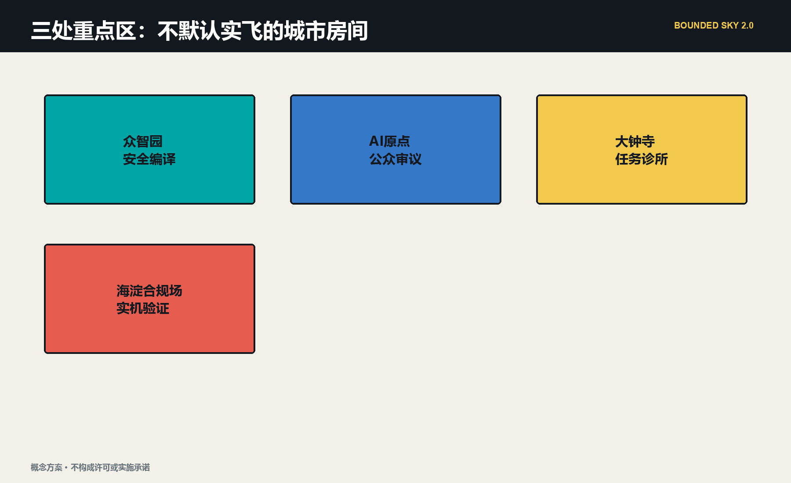
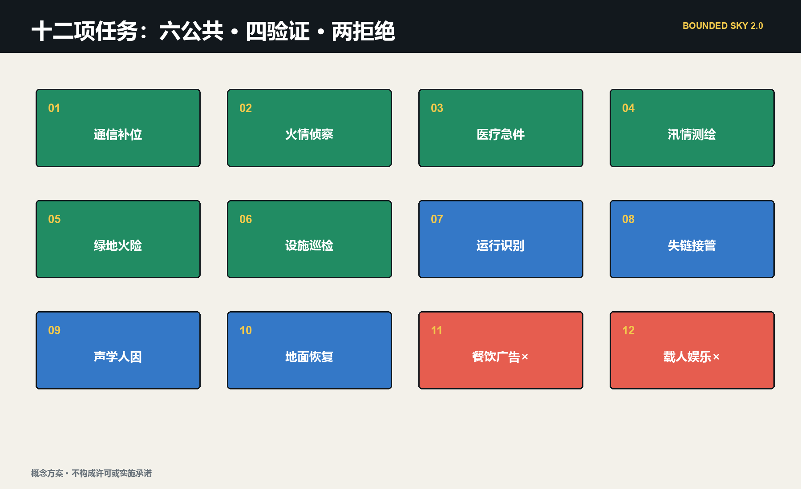
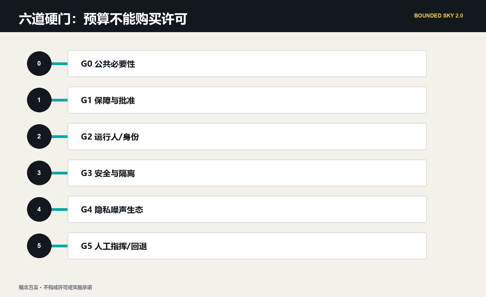
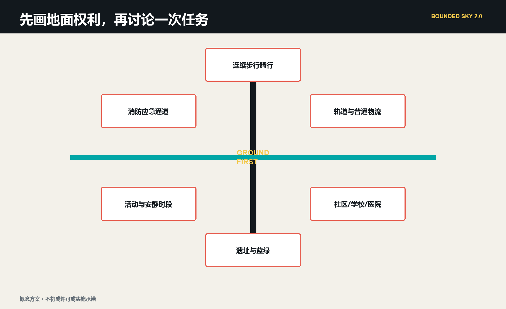
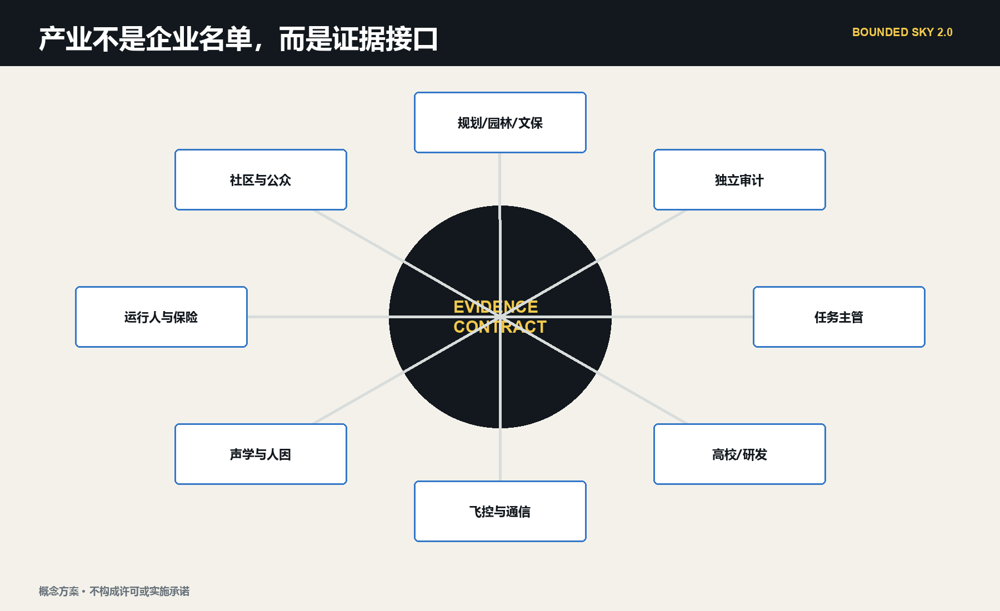
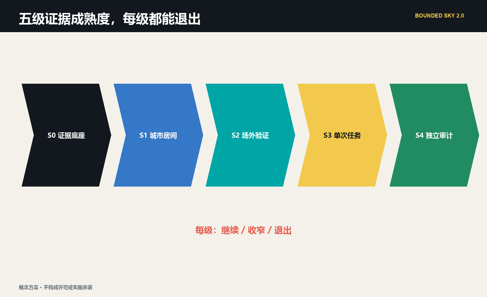
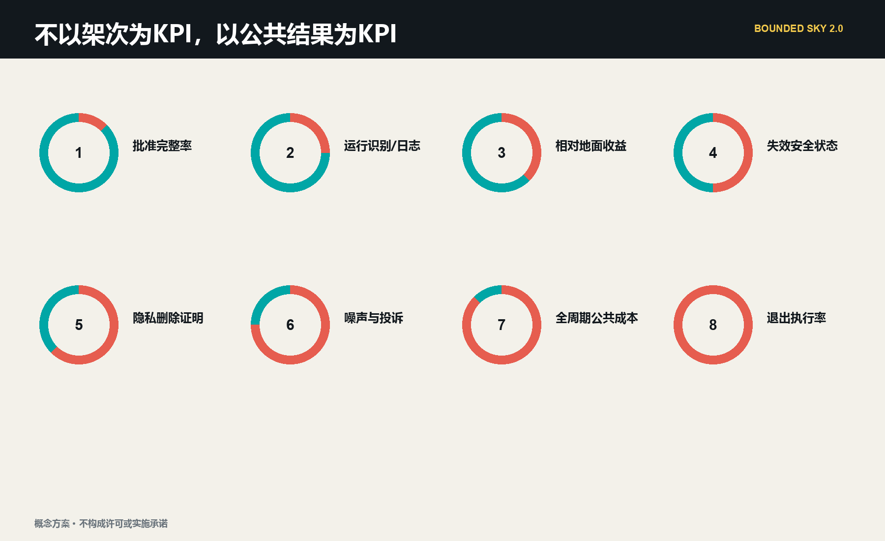
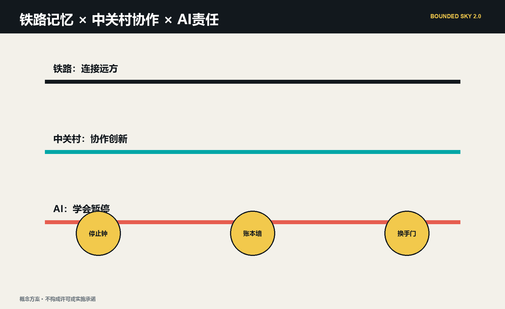
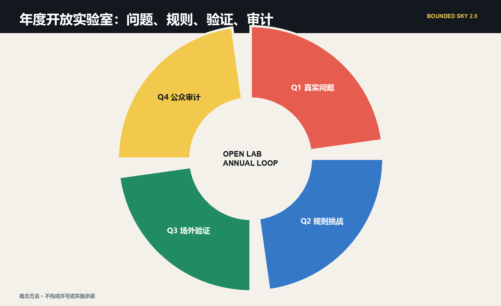